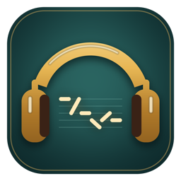

Shi Yin Guan · Dev Build v0.5一间收着旧唱片的铺子，一条会说话的街。
六声九调不是课本上的符号——它是市场讨价还价的尾音，是电车进站前的报站，是阿婆喊你返来食饭的那一声上扬。
主线完整可通关 · 解压即玩 · 无需安装
About
大多数语言学习产品把声调做成听力题。拾音馆把它做成一间铺子的生意：你要把六调听准，才修得好那台合音台；要把声母分清，市场街的声闸才会为你打开。
六调与四声母是第一课。展柜里放的是音高笔画，合音台上要对准的不是分数，是那一声该怎么拐。
先点两张熟字卡，再把声母与韵母推上声轨。用你已经在说的字，去够你还不认识的字。
市场四店与开市母带、电车四站与末班车、旧城三片段、河岸三采声点、戏棚四拍练习——修好一条街，解锁一套衣服。
见过的字、听过的音、用过的例句都留在册子里。2040 个有效音节，随时翻，随时接驳回已经走过的地方。
拼音本可以跳过、可以续看。学得慢不会卡住剧情，学得快也没有额外惩罚——它只是把话说得更清楚一点。
环境声、节拍、雨声、电车铃，都是程序合成；音高示意是纯音。没有一处借用他人的音轨。
The City
拾音馆 → 市场街 → 电车区 → 旧城 → 河岸 → 戏棚 → 中央调音台。十三个区域，每一个都有自己的底噪。
Download
当前是主线完整的开发试玩：能从头走到声音节，但美术、语音与难度仍在打磨。
| 版本 | v0.5 开发试玩（2026-10-28 构建） |
|---|---|
| 引擎 | Unity 6000.0.85f1 · URP |
| 平台 | Windows 10 / 11，64 位 |
| 操作 | 鼠标为主；← → 切换地点，Enter / E 进入，Tab 拾音册，Esc 设置 |
| 存档 | 自动保存到本机 AppData，支持断电恢复与损坏文件保留 |
| 在线版 | 正在做浏览器版本，暂时请先下载客户端 |